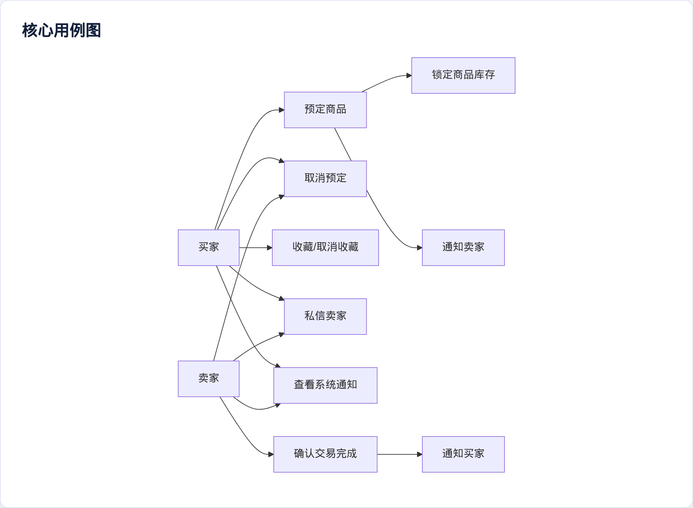
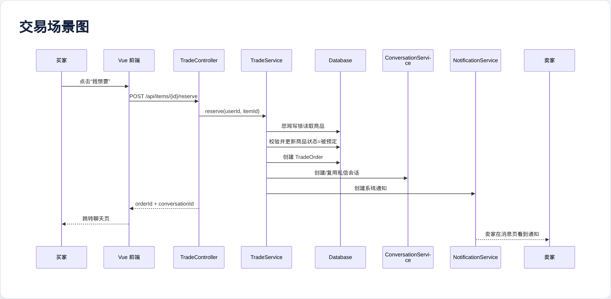
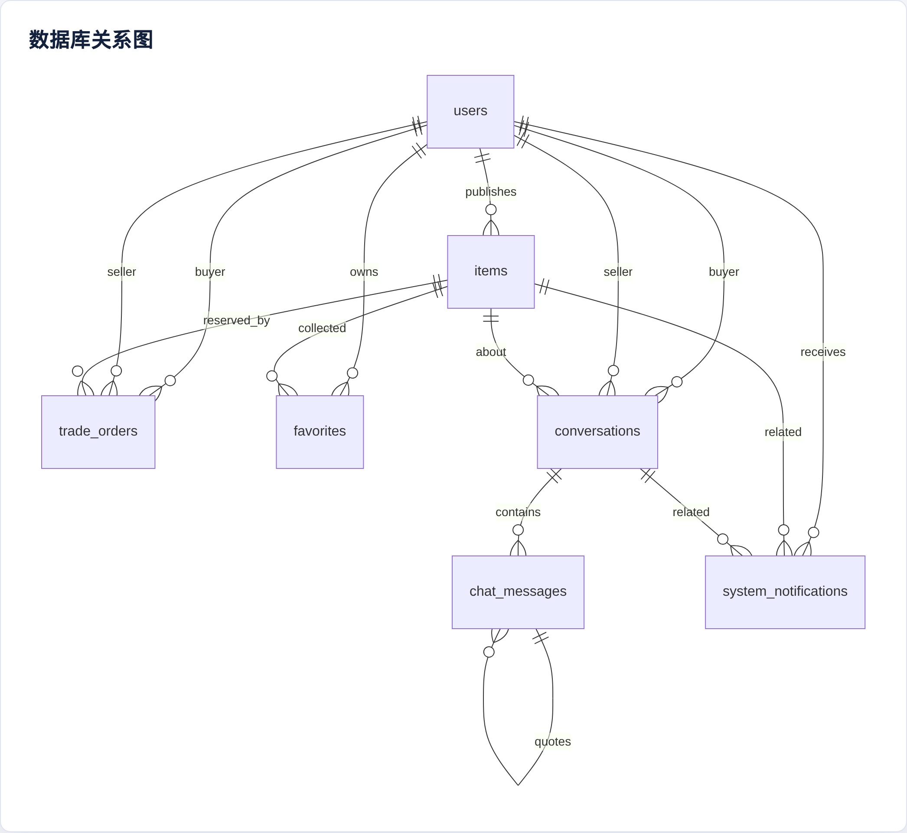
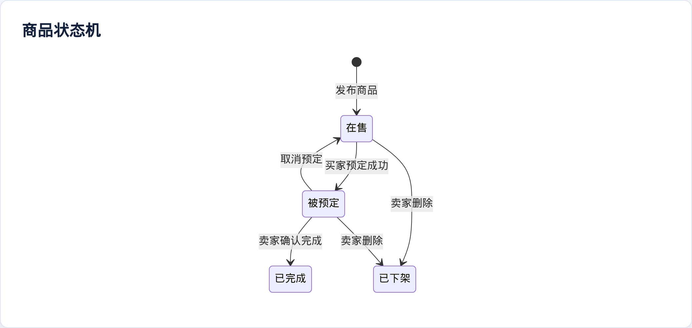
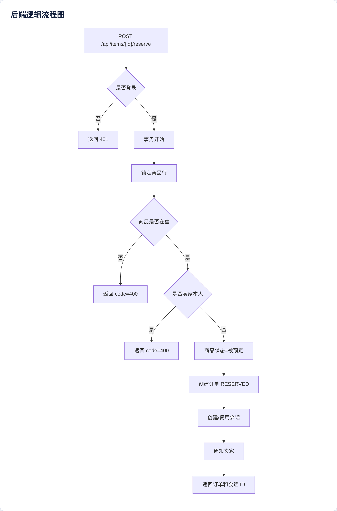
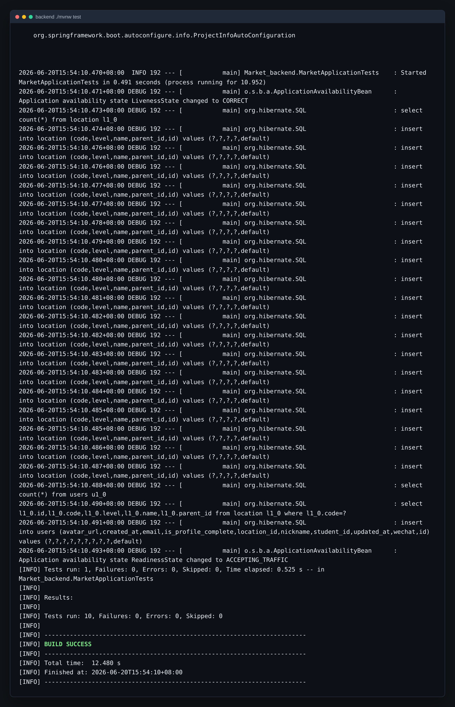
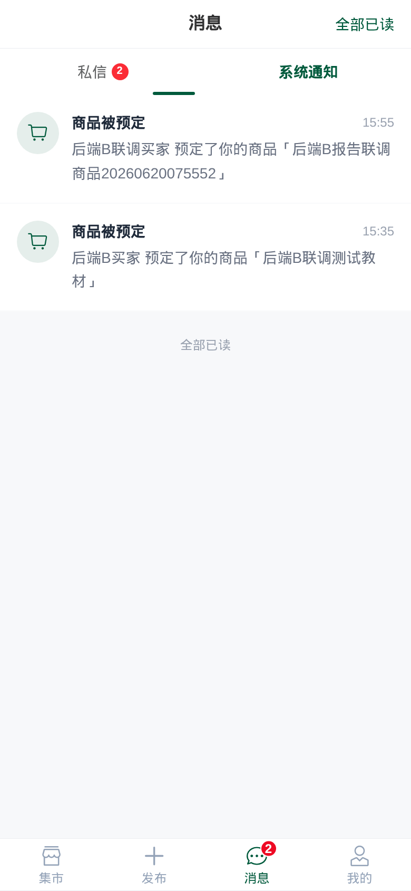

本章节用于并入团队最终报告，覆盖后端开发 B 在分工中负责的《需求分析》《系统设计》和《程序开发》内容。后端 B 在后端 A 已完成的认证、用户、商品 CRUD、上传和地点树基础上，补齐交易闭环、收藏、私信和系统通知能力。
根据团队分工，后端 B 负责核心业务开发，具体包括：
| 功能模块 | 需求说明 | 依赖基础 |
|---|---|---|
| 商品预定 | 买家点击“我想要”后锁定商品，避免其他买家继续预定 | 商品状态、当前用户识别 |
| 取消预定 | 买家或卖家可以取消未完成预定，商品重新回到在售状态 | 订单状态流转 |
| 交易完成 | 卖家确认线下面交完成，商品进入已完成状态 | 订单、商品、买卖双方 |
| 并发控制 | 同一商品同时被多人预定时只能成功一个 | 事务和行级锁 |
| 收藏 | 买家可以收藏或取消收藏商品，并在个人中心查看 | 当前用户、商品 ID |
| 私信 | 买家和卖家围绕商品建立会话，支持消息、引用、撤回和已读 | 用户、商品、会话 |
| 系统通知 | 预定、取消、完成等关键事件向对应用户发通知 | 业务事件和用户身份 |
| 类型 | 要求 |
|---|---|
| 一致性 | 商品预定必须在事务中完成，商品状态和订单状态不能出现不一致 |
| 并发安全 | 对商品行加悲观写锁，避免两个买家同时预定成功 |
| 可维护性 | 继续使用 Controller、Service、Repository、Entity、DTO 分层 |
| 可测试性 | 使用 H2 test profile 和 MockMvc 覆盖交易、消息、通知 API |
| 兼容性 | 保持后端 A 的 Result<T> 格式和前端现有字段不变 |


后端 B 新增 5 张表，均通过 JPA 实体映射，db/schema.sql 中同步保留结构说明，便于报告和答辩展示。
| 表 | 作用 | 关键字段 |
|---|---|---|
trade_orders |
记录预定和交易状态 | item_id、buyer_id、seller_id、status |
favorites |
记录用户收藏 | user_id、item_id 唯一约束 |
conversations |
记录围绕商品的买卖双方会话 | item_id、buyer_id、seller_id、未读数 |
chat_messages |
记录私信消息 | conversation_id、sender_id、recipient_id、quote_message_id |
system_notifications |
记录系统通知 | user_id、type、item_id、conversation_id、is_read |
数据库关系如下：

商品状态继续使用中文，直接适配前端页面展示；订单状态使用英文常量，便于代码中判断。

订单状态流转：
商品预定是后端 B 的关键一致性场景。实现时在 ItemRepository 中新增悲观写锁查询：
findByIdForUpdate(itemId)
预定流程在一个事务中完成：
TradeOrder；Conversation；由于第二个并发事务必须等待第一个事务提交，等它再次读取商品时状态已不再是“在售”，因此会返回业务错误，避免超卖。

后端 B 仍遵循后端 A 的分层结构：
Market_backend
├── controller
│ ├── TradeController
│ ├── FavoriteController
│ ├── ConversationController
│ └── NotificationController
├── service
│ ├── TradeService
│ ├── FavoriteService
│ ├── ConversationService
│ └── NotificationService
├── entity
│ ├── TradeOrder
│ ├── Favorite
│ ├── Conversation
│ ├── ChatMessage
│ └── SystemNotification
├── repository
│ ├── TradeOrderRepository
│ ├── FavoriteRepository
│ ├── ConversationRepository
│ ├── ChatMessageRepository
│ └── SystemNotificationRepository
└── dto
├── OrderVO
├── ConversationVO
├── ChatMessageVO
├── NotificationVO
└── UnreadSummaryVO
| 接口 | 功能 |
|---|---|
POST /api/items/{id}/reserve |
预定商品，返回订单和会话 |
POST /api/orders/{id}/cancel |
取消预定 |
POST /api/orders/{id}/complete |
卖家确认完成 |
GET /api/orders/reserved |
当前买家的预定列表 |
GET /api/orders/bought |
当前买家的已完成交易列表 |
POST /api/items/{id}/favorite |
收藏商品 |
DELETE /api/items/{id}/favorite |
取消收藏 |
GET /api/favorites |
收藏列表 |
POST /api/conversations |
创建或复用会话 |
GET /api/conversations |
私信列表 |
POST /api/conversations/{id}/messages |
发送消息 |
POST /api/messages/{id}/recall |
撤回消息 |
GET /api/notifications |
系统通知列表 |
GET /api/messages/unread-summary |
全局未读汇总 |
后端 B 实现后，前端原有占位逻辑已替换为真实接口：
| 页面 | 对接内容 |
|---|---|
Detail.vue |
收藏、预定、创建私信会话 |
Messages.vue |
私信列表、通知列表、已读、删除会话 |
Chat.vue |
消息列表、发送、引用、撤回 |
Profile.vue |
我买到的、我的预定、我的收藏 |
AppTabbar.vue |
全局未读数角标 |
新增 BackendBApiTests，使用 H2 test profile 和 MockMvc 验证核心业务：
| 测试内容 | 验证点 |
|---|---|
| 预定商品 | 商品状态变为“被预定”，返回订单和会话 |
| 重复预定 | 第二个买家不能预定已锁定商品 |
| 完成交易 | 只有卖家可完成，完成后商品变“已完成” |
| 取消预定 | 订单取消后商品恢复“在售” |
| 收藏 | 收藏后详情页 favorited=true，收藏列表可见 |
| 私信 | 会话创建、消息发送、引用、未读、已读 |
| 撤回 | 非发送者不可撤回，发送者可在限制内撤回 |
| 通知 | 预定和完成生成通知，通知可标记已读 |
cd backend
./mvnw test
前端构建：
cd frontend
npm ci
npm run build
后端 B 完成后，系统从“商品发布与浏览”扩展为完整的校园二手交易闭环：买家可以收藏、预定、私信卖家，卖家可以完成交易，系统可以通过通知和未读角标提醒双方处理交易进展。该部分与后端 A 的安全认证、商品基础能力以及前端买家端页面形成完整联动。

下图展示买家预定商品后，卖家消息页出现“商品被预定”系统通知，说明预定状态、会话与通知链路已经联通。
